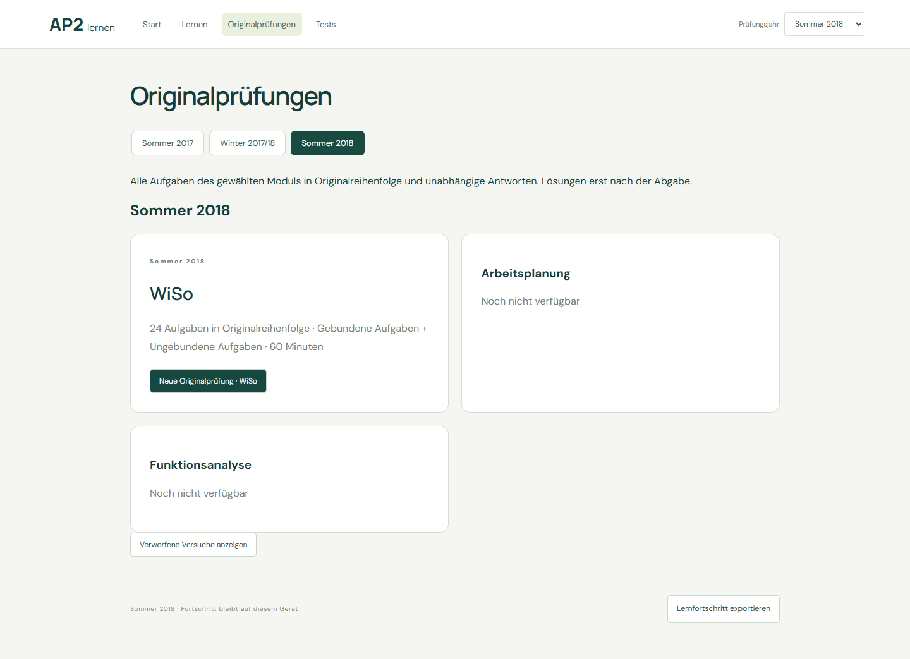
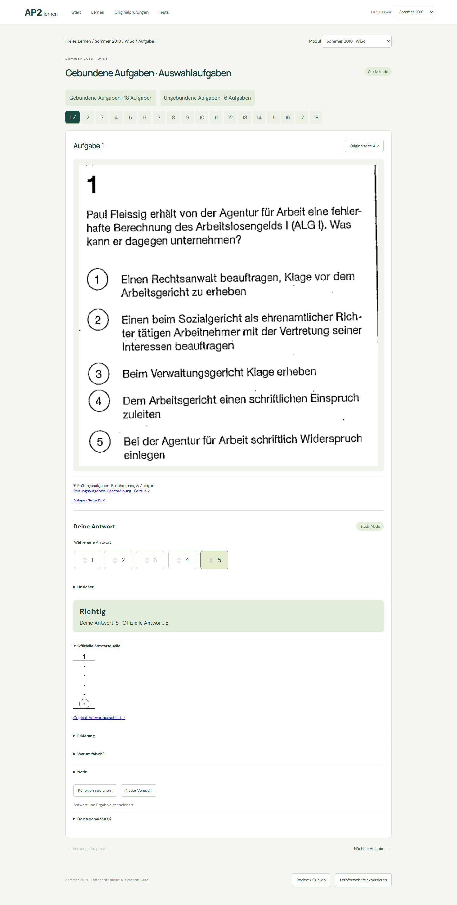
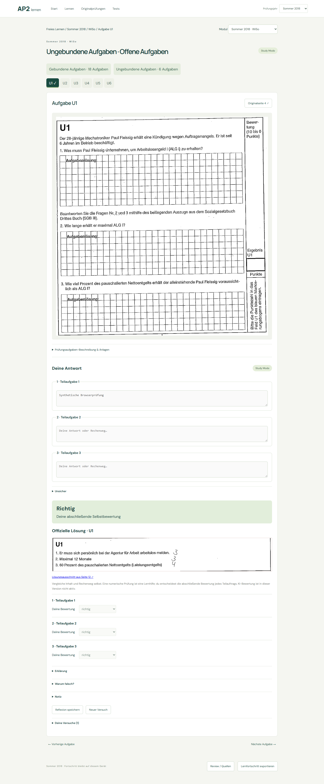
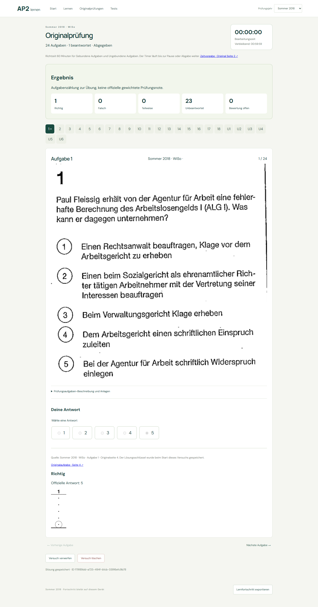
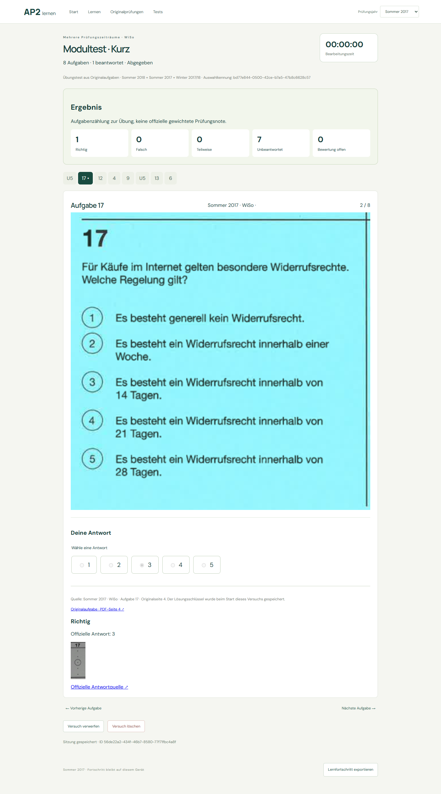

WiSo ist freigegeben. Arbeitsplanung und Funktionsanalyse bleiben wegen fehlender Pflichtanlagen gesperrt.
| Modul | Status | Abnahme |
|---|---|---|
| WiSo | 24 Aufgaben ·18 Antworten ·6 U-Lösungen | 24 Aufgaben · Lösungen & Ring-Overlay · Abdeckung |
| Arbeitsplanung | Blocked · Stückliste fehlt (U6/U7) | 36 Aufgaben · nur Vorschau · Befund |
| Funktionsanalyse | Blocked · Stückliste fehlt (U1/U2/U3) | Originalbelege · Befund |
FA wurde vor der Detailsegmentierung gestoppt. Keine fehlenden Inhalte ergänzt oder geraten.
ProgressRepository / AuthProvider / SyncProvider vollständig; weiterhin lokale IndexedDB, kein Login und keine Netzwerksynchronisation.18 Quellenregistrierungen. Ersatzquellen benötigen neue Validierung und vollständige sichere Identitätszuordnung.
Source Registry · Status · 1082 unveränderte historische Dateien · Wiederholung:0 Seiten · Browserprüfungen · Lifecycle
58 Frontendtests,93 Python-Tests. Alte persönliche Daten und alte Testzusammenstellungen bleiben unverändert. Private Baseline nicht veröffentlicht.





Keine späteren Jahrgänge bearbeitet. Hier endet Phase2F; Abnahme ausstehend.